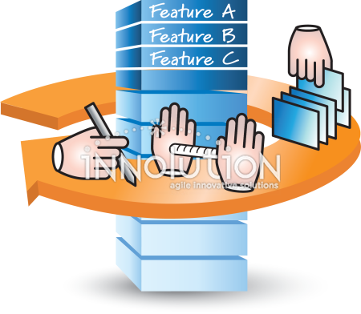

The Product Backlog is the single, ordered list of everything that might be needed in a product: features, enhancements, bug fixes, technical work, and ideas. It is owned by the Product Owner, who continuously refines and prioritizes it based on customer needs, business value, and stakeholder feedback. It is a living, long-term document that evolves as the product and market change, and its items are usually written at varying levels of detail, with the top items being the most refined and ready for development.

The Sprint Backlog, by contrast, is a short-term subset of the Product Backlog. It contains the items the team selects for a specific Sprint, along with the plan for delivering them, usually broken into tasks. It is owned by the Developers, who create it during Sprint Planning and update it daily as they learn more during the Sprint. While the Product Backlog answers “what might we build over time?”, the Sprint Backlog answers “what will we build in this Sprint, and how?” It is also much narrower in scope and time, covering only one Sprint (typically 1-4 weeks), and it ends when the Sprint does, with any unfinished items returning to the Product Backlog for re-prioritization.